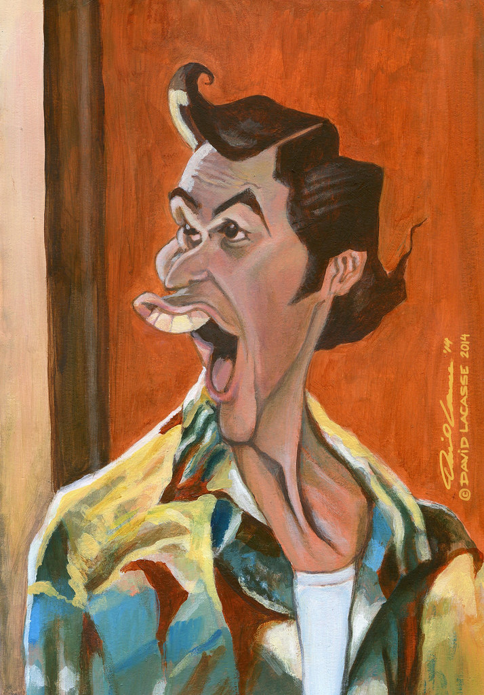

Jim Carrey

James Eugene ”Jim” Carrey (s. 17. tammikuuta 1962 Newmarket, Ontario, Kanada) on kanadalais-yhdysvaltalainen näyttelijä ja koomikko.
Hänet tunnetaan parhaiten ”kuminaamana”, koomisena kasvonvääntelijänä ja kinesteettisenä monitaiturina elokuvista Nuija ja tosinuija (1994),
Ace Ventura – lemmikkidekkari (1994), The Mask – naamio (1994), Ace Ventura – luonto kutsuu (1995), Valehtelija, valehtelija (1997), ja Bruce – taivaanlahja (2003).
Carrey on voittanut uransa aikana kaksi Golden Globe -palkintoa parhaasta miespääosasta: elokuvista The Truman Show (draama) ja Man on the Moon (komedia/draama).
Lisäksi Carrey on ollut ehdolla samassa kategoriassa neljä kertaa (The Mask – naamio, Valehtelija, valehtelija, The Grinch ja Tahraton mieli).
Tom Hanks

Thomas Jeffrey ”Tom” Hanks (s. 9. heinäkuuta 1956 Concord, Kalifornia) on yhdysvaltalainen näyttelijä ja elokuvantekijä.
Hänet tunnetaan rooleistaan elokuvissa Big (1988), Philadelphia (1993), Forrest Gump (1994), Apollo 13 (1995), Pelastakaa sotamies Ryan (1998),
Vihreä maili (1999), Cast Away – tuuliajolla (2000), Da Vinci -koodi (2006), Captain Phillips (2013) ja Saving Mr. Banks (2013),
minkä lisäksi hänet tunnetaan äänirooleistaan piirroselokuvissa Napapiirin pikajuna (2004) ja Toy Story -elokuvasarjassa.
Hanks tunnetaan myös yhteistyöstään ohjaaja Steven Spielbergin kanssa elokuvissa Pelastakaa sotamies Ryan, Ota kiinni jos saat (2002),
Terminaali (2004) ja Bridge of Spies (2015), sekä minisarjassa Taistelutoverit (2001), joka aloitti Hanksin menestyksekkään uran ohjaajana,
käsikirjoittajana ja tuottajana. Spielberg ja Hanks olivat vastaavia tuottajia myös vuoden 2010 minisarjassa The Pacific, joka on Taistelutoverit-sarjan tavoin toiseen maailmansotaan liittyvä sarja.